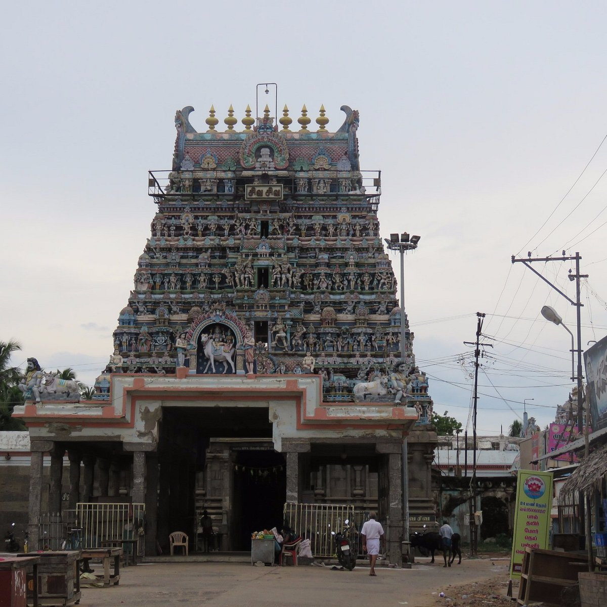

Padaleeswarar temple is a famous Hindu temple located in Cuddalore, Tamil Nadu. The temple is dedicated to Lord Shiva, who is worshipped as Padaleeswarar. Goddess Parvati is worshipped here as Periyanayagi Amman. The temple is one of the oldest temples in Tamil Nadu. It was built in the beautiful Dravidian style of architecture. Many devotees visit the temple daily to pray and seek blessings. The temple is closely connected with the Tamil Saivite saints called Nayanmars. Special festivals like Maha Shivaratri are celebrated grandly in the temple. The temple has a large tower, beautiful carvings, and peaceful surroundings. Cuddalore Padaleeswarar Temple is an important spiritual and tourist attraction in Cuddalore.